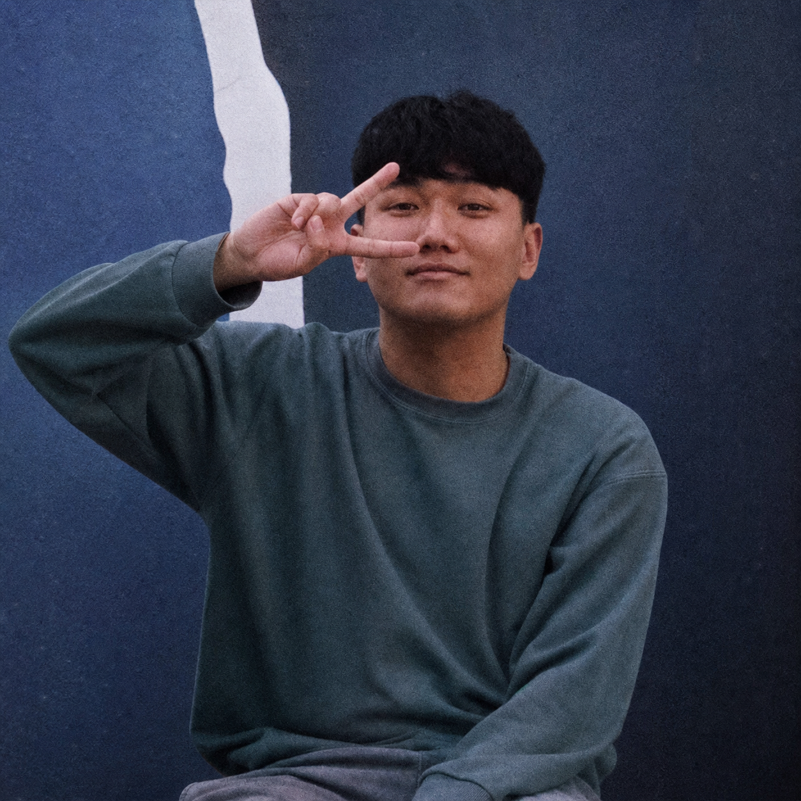
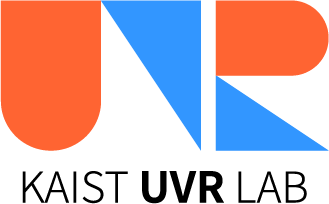

IEEE VR 2026 publication
Co-authored "A Unified Hand and Gesture Tracking via Offloading Framework for Object-mediated Interaction in Wearable AR."


KAIST UVR Lab / Interaction
I build and study interaction systems for XR, focusing on HCI, Computer Vision, Sensing.
NEWS
Co-authored "A Unified Hand and Gesture Tracking via Offloading Framework for Object-mediated Interaction in Wearable AR."
Contributed to RealityCrafter: User-guided Editable 3D Scene Generation from a Single Image in Mixed Reality.
Led Round-Trip2 Gesture: Inplace IMU Gesture Recognition with Visual Guidance for Out-of-FOV Interaction.
EDUCATION
Master Course. Research Assistant at Ubiquitous Virtual Reality Lab.
B.S. in Electrical and Computer Engineering, College of Engineering. Minor in Aesthetics, Department of Aesthetics, College of Humanities.
PUBLICATIONS
Woojin Cho, Taewook Ha, Taejun Son, Woontack Woo
손태준, 김영조, 차승현, 우운택, 윤상호
손태준, 이지현, 최희윤, 김두영, 우운택
Seokyoung Kim, Dooyoung Kim, Taejun Son, Woontack Woo
Taejun Son, Juyoung Lee, Seoyoung Oh, Woontack Woo
CONTACT